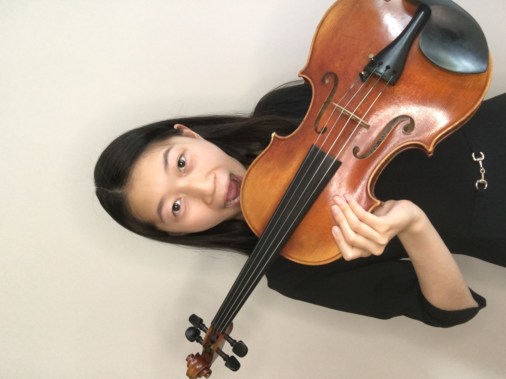

I'm running for StudCo Treasurer. Learn more about me and my mission or contact me to talk. Anything works. I'm here to "treasure" you all.
Hi! My name is Shiqi Cheng (also known as Sheeks or the random person who strides around the main building) and I'm a rising senior who lives in 06C. I'm from Naperville (I used to be a Neuqua kid) and you may have seen or talked to me before at math competitions, orchestra rehearsals, speech team, and elsewhere. I love doing puzzlehunts (essentially very long riddles) and I get into the silliest arguments (the Viola will always be the superior instrument). My journey to IMSA was just a large chain of decisions made on the whim, but I really appreciate so many of the experiences I've had here (everybody seriously needs to try sledding on the hills when it snows). I'm also slightly notorious for the large amounts of "funny" photos that have been publicized of me (by my very kind roommate), so to the right is just one more.

Advocating for the Student Body IMSA Students work hard enough already and recently you all have been working even harder trying to make things just. As a StudCo Member, I want to help make sure students are able to go to and receive support from StudCo when they're struggling with classes, teachers, or the IMSA environment. This includes increasing the amount of community conversations that are held and making myself available for anybody who has any concerns.
Clubs, clubs, and even more clubs! This year, IMSA club culture has been going extremely strong (just look at the number of IVC posts!) and I want to help the existing and newly chartered clubs stay just as strong. I will definitely advocate for more club-related field trips and other activities that have been limited this year due to COVID. Also don't worry, I know how to balance a budget and I'll make sure it's done correctly and well.
Ode to the Sibling Program The Big Sib program has been an awesome way for new sophomores to connect with upperclassmen, but we can definitely do more. Sibling pairs and families will be able to be strengthened next year with more consistent events and activities which promote bonding and fun!
Internal and External Communication More communication is just generally needed for the IMSA community to be aware of what StudCo is up to. I also look forward to StudCo acting more as a liason between PAC, Administration, and the Students for more effective communication about various topics including student health, food services, and more.
Feel free to text me on Messenger or Email. I basically live on both platforms, so I'll definitely see your message!
06C Resident :DD
Shiqi Cheng on Facebook Messenger
scheng1@imsa.edu